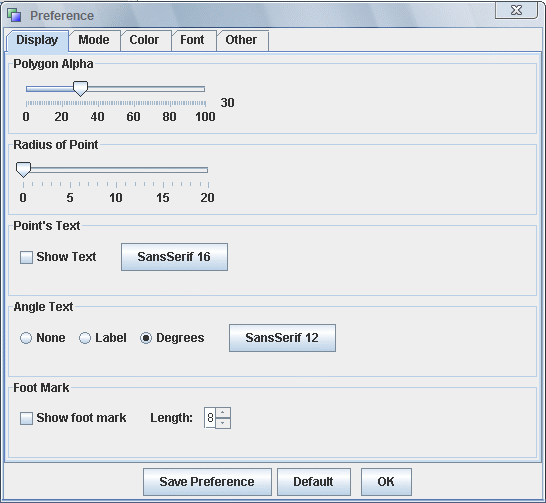

Preference
The Preference Dialog.
Use the menu "Option --> Preference" to show the preference dialog.

There are four tabs in this dialog: Display, Mode, Font, Other.
Display
- Polygon Alpha
- This set the alpha of color-filled polygon. The polygon is generated by action Fill Polygon or
 .
.
- This set the alpha of color-filled polygon. The polygon is generated by action Fill Polygon or
- Radius of Point
- This set the default radius of the point. A point is actually drawn as a "Circle". When this value is "0", this means the point is invisible.
- Point's Text
- This set wheather the text of the point is visible or not. Also the user can use the button to change the default font.
- Angle Text
- This set the type of anlge text and the default font of the angle text.
- None. No Text
- Label. The name of the angle.
- Degree. The value of the angle.
- This set the type of anlge text and the default font of the angle text.
- Foot Mark
- This set the attribute of the Foot Mark.
Mode

- Color Mode.
- Colorful.
- Gray.
- Black and White.
- Antialias.
- Language
- Look and Feel
This pane set the font for several different parts of JGEX.


Language Support
We try to built JGEX to support dozens of different languages. Currently, the English version and the Chinese version are finished.
Other
JGEX Help